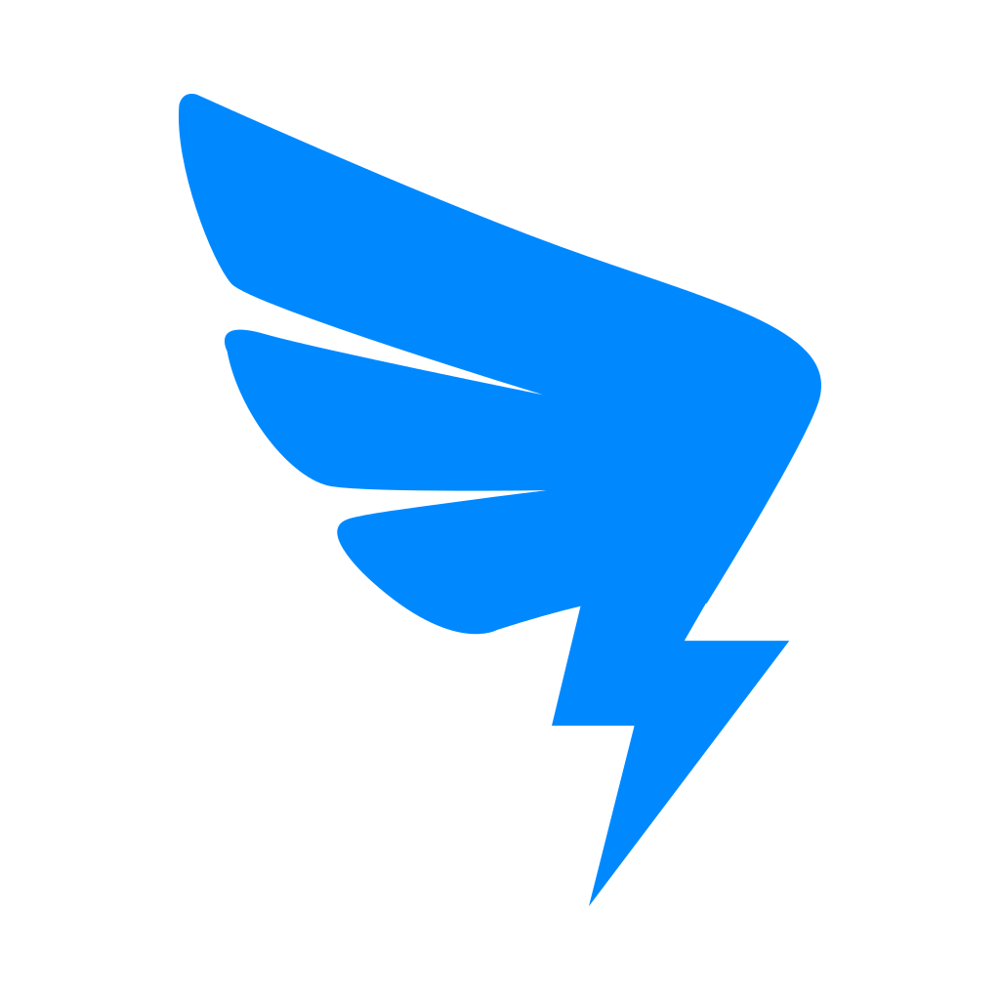
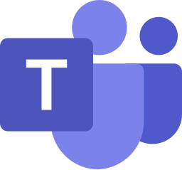

夥伴與管道管道矩陣
DeepTutor 管道矩陣全解析！16 個聊天管道一張表看懂，微信 QQ Telegram 都能當 AI 入口！｜零度解說
所有內建 Partner channels 的連線模型、關鍵欄位和適用場景。
原文連結：https://docs.deeptutor.info/zh-cn/partners/channels/
最近不少朋友在後台問我：DeepTutor 的 AI 學習夥伴（Partner），能不能直接接到微信、QQ、Telegram 這些聊天軟體裡用？
答案是：能，而且官方一次性內建了 16 個管道（channel），微信、企業微信、QQ、Telegram、Discord、Slack、飛書、釘釘、Matrix、Email……全都在列表裡。
這 16 個管道，本質上都是同一個 Partner 大腦外面的投遞轉接器：一條即時通訊（IM）軟體裡進來的訊息，會變成作用域內的一輪對話（chat turn），處理完的回覆再透過原管道發回去。
也就是說，不管你接幾個軟體，背後做事的始終是同一個大腦，它不會建立第二套執行環境（agent runtime），資源一點不浪費。
但是問題來了。
16 個管道，連線模型各不相同，關鍵欄位也五花八門，該怎麼選、怎麼配？很多人看到這裡，基本就放棄了。
好訊息是，絕大多數設定都能在網頁介面（Web UI）裡點點滑鼠完成：Partners -> 你的 partner -> Channels 頁面會從 /api/v1/partners/channels/schema 讀取即時設定範本（schema），自動把金鑰欄位遮罩顯示，輪詢 /channels/status，還允許你直接 reload channels，全程不需要手寫 YAML。

下面這張總表，建議先收藏再看。
內建管道
| 管道 | Key | 連線模型 | 適合場景 | 核心欄位 |
|---|---|---|---|---|
| weixin | HTTP long-poll + 掃描 QR Code 登入 | 個人微信助手 | allow_from ；可選 token 、 state_dir 、 route_tag 、 poll_timeout | |
| WeCom | wecom | 企業微信 AI Bot WebSocket | 企業微信 / WeChat Work | bot_id 、 secret 、 allow_from |
| 騰訊 botpy WebSocket | 官方 QQ Bot 部署 | app_id 、 secret 、 allow_from 、 msg_format | ||
| QQ (NapCat) | napcat | OneBot v11 WebSocket | 透過 NapCat 接個人 QQ | ws_url 、可選 access_token 、 allow_from 、 group_policy |
| Telegram | telegram | Bot API polling | 簡單個人/群 bot | token 、 allow_from |
| Discord | discord | Gateway WebSocket | Discord server 和 DM | token 、 allow_from 、群策略欄位 |
| Slack | slack | Socket Mode | Slack team、DM、threaded channel help | bot_token 、 app_token 、 allow_from 、 group_policy |
| Feishu / Lark | feishu | Lark SDK WebSocket | 飛書 / Lark 企業聊天 | app_id 、 app_secret ，以及 verification/encryption 欄位 |
| DingTalk | dingtalk | Stream Mode | 釘釘企業聊天 | client_id 、 client_secret 、 allow_from |
| Matrix | matrix | Matrix sync loop | 去中心化房間，可選 E2EE | homeserver 、使用者憑證或 access_token 、 allow_from 、 group_policy |
| Zulip | zulip | Event queue | stream + topic 工作流 | email 、 api_key 、 site 、 allow_from 、 group_policy |
| Mattermost | mattermost | 原生 v4 WebSocket + REST | 自託管開源團隊聊天 | server_url 、 bot_token 、 allow_from 、可選 group_policy 、 reply_in_thread 、 verify_ssl |
| Bridge WebSocket | 透過橋接執行環境接 WhatsApp | bridge URL/token、 allow_from | ||
| IMAP poll + SMTP send | 非同步郵件答疑 / helpdesk | IMAP host/user/password、SMTP host/user/password、 allow_from | ||
| Mochat | mochat | Socket.IO 或 HTTP polling | 客服式聊天面板 | base_url / socket URL、 claw_token 、 allow_from |
| Microsoft Teams | msteams | 內建 HTTP webhook listener | Teams DM-first Bot Framework 整合 | app_id 、 app_password 、 tenant_id 、host/port/path |
安裝依賴
除了 Matrix，所有內建管道都包含在 Partners 可選元件（extras）裡，一條命令就能裝齊：
pip install -e ".[partners]"
# 或发布包支持 extras 时：
pip install "deeptutor[partners]"這一條命令會裝齊全部管道的開發工具包（SDK）：python-telegram-bot、slack-sdk、lark-oapi、dingtalk-stream、qq-botpy、wecom-aibot-sdk、python-socketio 等（完整清單見 requirements/partners.txt）。
更香的是，Email 管道只用 Python 標準庫，連額外的包都不用裝。
Matrix 單獨成 extra：因為加密房間依賴原生 libolm 庫：普通房間裝 ".[matrix]"，要玩端對端加密（E2EE）房間就裝 ".[matrix-e2e]"。
如果伺服器上缺某個管道的依賴，Channels 面板會把它置灰並顯示 import 錯誤（如 No module named 'lark_oapi'）。
已安裝的卡片會用狀態區分：Connected、Connecting、Listener running、Waiting for scan、Configuration required、Connection failed 與 Not connected，按提示補依賴或設定，再重新啟動/reload Partner 就行。
共享投遞開關
大多數管道都繼承同一組投遞開關（delivery controls）：
| 欄位 | 含義 |
|---|---|
| enabled | 是否啟動這個管道。 |
| send_progress | 長回合期間是否投遞過程解說（narration）/進度。 |
| send_tool_hints | 是否投遞一行工具呼叫提示。除錯時有用，生產環境可能太吵。 |
| streaming | 僅 Telegram、Discord、Feishu：回覆即時串流輸出，靠原地編輯訊息逐步長出（Feishu 走 CardKit 串流卡片）。需要 send_progress 開啟。預設關閉。 |
| allow_from | 使用者/會話白名單。 * 適合測試；部署時更建議明確 id。 |
設定流程
- 先在網頁介面裡建立並測試 Partner，不要一開始就開 IM 管道。
- 第一次只啟用一個管道。
- 除錯階段保持
send_progress和send_tool_hints開啟。 allow_from: ["*"]只用於本機/私有測試。- 先確認即時卡片進入 connected/listening 狀態，再發一條短訊息並把
*換成真實的傳送者 id；只有狀態詳情不夠時才查日誌。 - 第一個管道穩定後，再新增其它管道。
怎麼選
- 個人微信用 WeChat ，需要人工掃描 QR Code 和持久化 state。
- 企業/團隊部署用 WeCom 、 Feishu 、 DingTalk 、 Slack 或 Teams 。
- 官方 QQ Bot 用 QQ ；只有在明確操作個人 QQ bridge 時才用 NapCat 。
- 非同步收件匣工作流用 Email 。
- 需要房間/話題結構時，用 Matrix 或 Zulip 。
- 想要自己維運的自託管開源團隊聊天，用 Mattermost 。
狀態存在哪裡
管道狀態存在 Partner 的 channels/ 目錄下，例如：
data/partners/<partner_id>/channels/weixin/account.json
data/partners/<partner_id>/channels/msteams/msteams_conversations.jsonDocker（容器部署工具）或生產部署要持久化整個 data/partners/。
丟失管道狀態可能導致重新掃描 QR Code，或重新收集會話引用。
詳細頁面
每個內建管道都有專屬設定頁：平台側申請步驟、對著截圖逐欄位講解管道卡片（channel card）、配完後的驗證流程和故障排查：
 WeChat —— 個人微信掃描 QR Code 登入和長輪詢（long-poll）設定
WeChat —— 個人微信掃描 QR Code 登入和長輪詢（long-poll）設定 WeCom —— 企業微信 AI Bot 設定
WeCom —— 企業微信 AI Bot 設定 QQ / NapCat —— 官方 QQ bot 和個人 QQ bridge 兩條路徑
QQ / NapCat —— 官方 QQ bot 和個人 QQ bridge 兩條路徑 Telegram —— BotFather 註冊、Bot API 輪詢、串流回復
Telegram —— BotFather 註冊、Bot API 輪詢、串流回復- Discord —— Developer Portal 應用、intents、Gateway WebSocket
- Slack —— Socket Mode 應用（bot + app 雙 token）
- Feishu / Lark —— 開放平台應用和 CardKit 串流卡片

DingTalk —— Stream Mode 企業機器人- Matrix —— homeserver 憑證和可選 E2EE
 Zulip —— bot 帳號和 stream 訂閱
Zulip —— bot 帳號和 stream 訂閱- Mattermost —— 自託管伺服器，bot token 走原生 v4 API
 WhatsApp —— bridge 執行環境設定
WhatsApp —— bridge 執行環境設定- Email —— IMAP 收件輪詢和 SMTP 回信
- Mochat —— Socket.IO 客服面板

Microsoft Teams —— Bot Framework webhook 監聽
部署過程遇到問題，歡迎在留言區留言，把報錯的完整日誌貼出來，我看到會回覆。